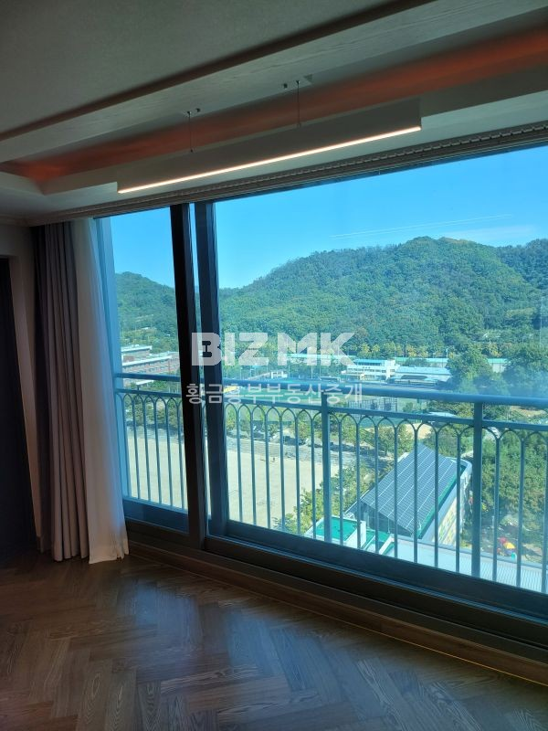

황금동 · 황금흥부부동산중개
황금동의 생활, 원하는 집부터 찾아보세요.
캐슬골드파크를 비롯해 황금흥부가 취급하는 주변 단지와 상가. 전체 등록 매물을 조건별로 비교해 보세요.

중개소 전체 매물 222
주력 단지부터 주변 단지, 그 밖의 등록 매물까지 한곳에서 살펴보세요.
최근완전올확장 올화이트인테리어된완벽 그대로입주 시스템4대
매물 자세히 보기 →최근배관포함올수리.시스템에어컨.완벽인테리어.탁트인전망최고.조율
매물 자세히 보기 →재건축철거중 시공사화성
매물 자세히 보기 →트인전망 판상형 주인관리굿 모든조건조율
매물 자세히 보기 →남향 관리잘된집 이사항시금액조율
매물 자세히 보기 →현체육관성업중 유동인구많은단지내상가 투자추천
매물 자세히 보기 →상권생활편리동선호남향기본집 집깨끗 금액조율 이사항시
매물 자세히 보기 →경고트인전망선호동 거실확장 이사10월15일
매물 자세히 보기 →4단지선호남향트인전망 주인관리굿
매물 자세히 보기 →선호남향 방3확장올인테리어깔끔 주인관리굿
매물 자세히 보기 →1층 최고선호조용한동 올확장 인테리어 보조주방펜트리방만듬 금액조율
매물 자세히 보기 →트인전망 올확장주인관리잘된집
매물 자세히 보기 →올확장 선호남향 관리굿주인세대 금액조율
매물 자세히 보기 →탑층 탁트인전망 방1확장 부분수리 깨끗함 이사항시
매물 자세히 보기 →선호남향 거실방2확장 주인관리세대 조건조율
매물 자세히 보기 →트인전망 올확장 선호조용한남향 주인관리굿
매물 자세히 보기 →필로티2층 올확장 인테리어된주인세대 금액조율
매물 자세히 보기 →올확장 선호트인라인 이사항시
매물 자세히 보기 →최고선호남향방2확장주인관리굿 기운좋은집
매물 자세히 보기 →급매선호남향 선호라인 예쁜정원뷰 올확장 학군배정최고 금액조율
매물 자세히 보기 →선호남향 기본집
매물 자세히 보기 →선호남향 깨끗한기본집 월세안고27년4월 매매
매물 자세히 보기 →최고선호남향선호라인 올인테리어된주인관리굿이사항시
매물 자세히 보기 →1층 올확장 어린이키우기굿 선호남향
매물 자세히 보기 →트인전망선호남향 올확장 주인관리세대
매물 자세히 보기 →트인전망선호동 방1확장
매물 자세히 보기 →최고선호남향올확장 박물관뷰 주인관리굿
매물 자세히 보기 →방2확장 뒷주방확장 주인관리굿 트인라인 기운좋은집 금액조율
매물 자세히 보기 →선호남향 올확장 주인관리굿
매물 자세히 보기 →트인산전망 선호남향 주인관리굿 금액조율
매물 자세히 보기 →급매 중심상가편리동 올확장 씽크대교체 관리잘된주인세대 금액조율
매물 자세히 보기 →올확장 씽크대교체 붙박이장설치 선호동 이사27년2월16일
매물 자세히 보기 →트인전망선호동거실확장 주인관리굿
매물 자세히 보기 →선호남량 방2확장 주인관리잘된세대
매물 자세히 보기 →올확장 조용한선호동 집깨끗 이사27년1월21일 조율가능
매물 자세히 보기 →트인전망 기본집 선호동
매물 자세히 보기 →58급매 방2확장 선호남향 주인관리굿 금액모든조건조율
매물 자세히 보기 →급매 트인전망 올확장 주인관리세대
매물 자세히 보기 →최신올확장 시스템에어컨 완전최상올인테리어그대로입주
매물 자세히 보기 →트인전망 거실확장관리잘된 주인거주 금액조율
매물 자세히 보기 →올확장 트인전망 전세안고매매 27년8월만기
매물 자세히 보기 →선호남향 올확장 중심상가편의시설굿 주인관리세대
매물 자세히 보기 →탁트인전망동 편의시설편리동 관리잘된주인세대 금액조율
매물 자세히 보기 →급매 선호남향 방2확장 주인관리세대
매물 자세히 보기 →완전올인테리어확장 그대로입주 1층 어린이편히키울수있는집 금액조율
매물 자세히 보기 →올확장 선호남향 주인관리굿 주인거주 로얄층
매물 자세히 보기 →선호단지 학군굿 기본집 조건조율
매물 자세히 보기 →방1확장 주인세대관리굿
매물 자세히 보기 →거실방1확장선호조용한동 주인관리굿
매물 자세히 보기 →선호남향 거실방확장 주인관리굿 금액조율
매물 자세히 보기 →최고선호남향 화장실수리 부분수리된주인관리굿 조건조율
매물 자세히 보기 →방2확장 뒷주방확장 완전올인테리어 시스템에어컨 그대로입주 조건조율가능
매물 자세히 보기 →선호남향 올확장선호라인 주인관리굿
매물 자세히 보기 →트인전망 선호동 올확장 수리된집
매물 자세히 보기 →탁트인전망 기본집 주인관리잘된집 금액조율
매물 자세히 보기 →선호남향 거실방확장화이트톤주인관리굿
매물 자세히 보기 →트인전망올확장 선호남향
매물 자세히 보기 →최고선호남향올확장 뒷주방확장 주인관리세대 뒷박물관뷰
매물 자세히 보기 →남향부분수리 깨끗한 관리굿 이사항시 금액조율
매물 자세히 보기 →최고선호남향 화장실기본수리관리잘된주인세대
매물 자세히 보기 →트인전망기본집 금액조율
매물 자세히 보기 →선호남향 거실방2확장 주인관리굿 조건조율
매물 자세히 보기 →선호남향 27년12월월세만기 금액조율
매물 자세히 보기 →선호남향 방2확장거실확장 시스템에어컨 올인테리어된집
매물 자세히 보기 →트인전망2년전올수리인테리어 선호라인 관리굿
매물 자세히 보기 →트인전망동 올확장 뒷주방확장
매물 자세히 보기 →급매선호남향 방확장
매물 자세히 보기 →트인전망선호남향 올확장 인테리어된주인관리세대
매물 자세히 보기 →선호남향 방2확장 관리주인세대 이사항시
매물 자세히 보기 →선호남향 기본집 이사10월11월
매물 자세히 보기 →선호남향 올확장관리잘된기운좋은집
매물 자세히 보기 →올확장씽크대교체 부분인테리어된주인관리굿
매물 자세히 보기 →남향 선호동 집깨끗 27년 12월 월세안고매매
매물 자세히 보기 →트인전망 선호동 거실방확장 수리된집 월세안고매매
매물 자세히 보기 →트인전망 선호남향 주인관리잘된집 금액조율
매물 자세히 보기 →트인전망 올확장 주인관리굿
매물 자세히 보기 →올확장올인테리어관리잘된주인세대
매물 자세히 보기 →거실방2확장 기본수리 선호남향 이사항시 금액조율
매물 자세히 보기 →선호남향 방1확장 금액조율
매물 자세히 보기 →최고선호남향 선호라인 박물관뷰 기본집 주인관리세대굿 금액조율
매물 자세히 보기 →트인전망 부분수리된집깨끗 이사27년1월19일이후
매물 자세히 보기 →최고남향동 방2확장 트인전망선호라인 주인관리굿 이사항시가능금액조율
매물 자세히 보기 →선호남향 거실확장 관리굿 금액조율
매물 자세히 보기 →최고선호남향 올확장인테리어 박물관뷰 선호라인
매물 자세히 보기 →선호남향 모든조건조율
매물 자세히 보기 →올확장 전세3억3000 27년8월만기
매물 자세히 보기 →선호남향거실 방확장 주인관리굿 트인전망 초품아 금액조율
매물 자세히 보기 →정원뷰 방1확장 주인관리굿 모든조건조율
매물 자세히 보기 →최근올화이트톤완벽인테리어 안방거실시스템에어컨 그대로입주 금액조율
매물 자세히 보기 →급매 거실방1확장 부분인테리어수리된주인관리굿 금액조율
매물 자세히 보기 →선호남향 트인전망 기본집 주인관리세대 기운좋은집
매물 자세히 보기 →트인전망선호남향 기본집주인관리세대
매물 자세히 보기 →탑층 올확장트인박물관뷰 기운좋은집 이사항시
매물 자세히 보기 →트인전망 샷시교체 인테리어된주인관리굿 금액조율
매물 자세히 보기 →선호남향 방2확장 주인관리굿 금액조율
매물 자세히 보기 →트인전망올확장 주인관리굿
매물 자세히 보기 →로열동고층 정남향 풀에어컨 이사조율
매물 자세히 보기 →탁트인선호남향 화이트톤인테리어 방2확장
매물 자세히 보기 →선호동거실방2확장 주인관리굿 조건조율
매물 자세히 보기 →선호남향거실확장 주인관리정말잘한집
매물 자세히 보기 →트인전망 거실확장 이사10월이후조율
매물 자세히 보기 →선호트인전망 거실확장 이사항시
매물 자세히 보기 →선호동부분인테리어된깨끗집
매물 자세히 보기 →트인전망선호남향 기본집주인관리세대
매물 자세히 보기 →트인전망 올확장올인테리어주인관리굿
매물 자세히 보기 →올확장 선호남향 주인세대 금액조율
매물 자세히 보기 →탁트인전망 올확장 선호남향 모든조건조율
매물 자세히 보기 →선호남향 거실확장인테리어 이사조율 금액조율
매물 자세히 보기 →트인전망 거실방1확장 주인관리굿 조건조율
매물 자세히 보기 →트인전망선호남향 거실확장 방1확장주인관리세대
매물 자세히 보기 →확장형 탁트인전망 금액조율
매물 자세히 보기 →탁트인전망 층간소음없는귀한탑층 방2확장 주인관리세대
매물 자세히 보기 →탁트인전망 탑층 기본집
매물 자세히 보기 →올확장 선호라인 주인관리세대 금액조율
매물 자세히 보기 →올확장 붙박이각방설치 이사27년2월16일
매물 자세히 보기 →최신인테리어시스템에어컨 거실 방2확장 주인관리굿
매물 자세히 보기 →조용한선호남향 씽크대화장실인테리어된된관리굿 가격조율
매물 자세히 보기 →트인전망 방2확장 주인관리세대
매물 자세히 보기 →최고선호남향 방2확장 금액조율
매물 자세히 보기 →선호남향 거실확장부분인테리어 주인관리굿
매물 자세히 보기 →트인전망 올확장 뒷주방확장 주인관리굿 모든조건조율
매물 자세히 보기 →탑층 선호남향 트인전망 주인관리굿 빠른이사
매물 자세히 보기 →재건축철거중 시공사화성
매물 자세히 보기 →급매 재건축철거중
매물 자세히 보기 →급매 올확장 주인관리세대굿 모든조율가능
매물 자세히 보기 →재건축 화성시공사 철거중
매물 자세히 보기 →최고선호남향동 방2확장 부분수리 모든조건조율
매물 자세히 보기 →트인전망최고동 리모델링주인관리굿 거실시스템
매물 자세히 보기 →트인전망 최근올확장 올화이트톤인테리어 주인세대관리굿
매물 자세히 보기 →선호남향올확장 관리잘된기운좋은주인집
매물 자세히 보기 →탁트인전망 확장형 금액조율
매물 자세히 보기 →완전화이트톤올수리 리모델링 그대로입주 트인영구조망
매물 자세히 보기 →탁트인전망 거실확장 방1확장 주인관리세대 이사조율
매물 자세히 보기 →탑층 선호남향 트인전망 빠른이사
매물 자세히 보기 →선호남향 편의시설굿 주인관리굿 이사항시
매물 자세히 보기 →선호남향 올확장 11월이후이사항시조율
매물 자세히 보기 →트인전망 선호라인 남향동 주인관리세대 이사항시 금액조율
매물 자세히 보기 →급매 최고선호남향 방 거실확장 이사조율
매물 자세히 보기 →최고선호남향 올확장 탑층 박물관트인전망 주인관리굿 기운좋은집 금액조율
매물 자세히 보기 →탁트인전망올확장올화이트톤인테리어 샷시까지교체된집
매물 자세히 보기 →선호남향 부분수리한깨끗한집 이사조율
매물 자세히 보기 →최고선호남향 일부수리된깨끗한기본집 이사조율
매물 자세히 보기 →선호동선호라인 부분인테리어된주인관리굿 금액조율
매물 자세히 보기 →최고선호남향 트인전망 거실방2확장 주인관리굿 금액조율
매물 자세히 보기 →선호남향방1확장 주인세대관리굿 금액조율
매물 자세히 보기 →트인전망 선호동 올확장주인관리굿
매물 자세히 보기 →선호남향 기본집 주인관리깨끗 선호라인 빠른이사가능
매물 자세히 보기 →선호남향 거실 방2확장 부분수리 속집
매물 자세히 보기 →급매 올확장 올화이트톤인테리어주인관리굿
매물 자세히 보기 →트인전망 올확장올화이트톤인테리어 샷시까지교체된 주인관리세대
매물 자세히 보기 →선호남향 선호라인 관리잘된기본집
매물 자세히 보기 →최고선호남향 선호라인 기본집 월세안고매매 금액조율
매물 자세히 보기 →급매선호최고동 선호라인트인전망 올확장 주인관리굿 올인테리어 금액조율
매물 자세히 보기 →선호동 방1확장 집깨끗
매물 자세히 보기 →트인전망선호남향 확장 주인관리세대 이사항시
매물 자세히 보기 →선호남향올확장 부분수리깨끗 이사항시
매물 자세히 보기 →올확장 트인전망선호남향 전세안고 매매
매물 자세히 보기 →선호남향 관리잘된기본집 금액조율
매물 자세히 보기 →필로티2층 올확장 인테리어된주인세대 금액조율
매물 자세히 보기 →기본집 부분수리 전세2억5000 27년3월만기
매물 자세히 보기 →앞뒤트인전망 기본집 주인관리굿
매물 자세히 보기 →선호남향 올확장선호트인라인 전세안고매매 조건조율
매물 자세히 보기 →선호남향 올확장 관리잘된주인세대 금액조율
매물 자세히 보기 →선호남향거실확장 방1확장 관리굿주인세대 금액조율
매물 자세히 보기 →선호남향 방1확장욕실 씽크대 부분수리
매물 자세히 보기 →1층 방2확장 최고선호동
매물 자세히 보기 →최근올인테리어한주인관리굿선호남향 금액조율
매물 자세히 보기 →최고선호남향 박물관뷰 트인선호라인 주인관리굿
매물 자세히 보기 →최고선호남향 트인라인기본집깨끗
매물 자세히 보기 →최근올확장인테리어완벽 어린아이편히키울수있어요
매물 자세히 보기 →중심상가편리동 선호남향 기본집 금액조율
매물 자세히 보기 →올확장.남향조용한 선호동
매물 자세히 보기 →거실확장 방2확장선호동 관리잘된주인세대
매물 자세히 보기 →트인전망 올확장올화이트톤인테리어된주인관리잘된집
매물 자세히 보기 →최근올확장올인테리어 선호남향 금액조율
매물 자세히 보기 →초품아 선호남향 거실방확장 주인관리굿 금액조율
매물 자세히 보기 →선호남향선호라인 올인테리어된주인관리세대
매물 자세히 보기 →최고선호남향 방2확장 부분수리된집 이사27년1월15
매물 자세히 보기 →방2확장 뒷주방확장 화이트톤주인관리굿 선호탁트인라인 기운좋은집 금액조율
매물 자세히 보기 →트인전망 최근완전올인테리어된최상집 그대로입주
매물 자세히 보기 →선호남향 선호라인 방2확장 부분수리 주인관리굿 금액조율
매물 자세히 보기 →앞뒤탁트인전망 방2확장 주인관리세대집깨끗
매물 자세히 보기 →거실방1확장 인테리어된주인관리굿
매물 자세히 보기 →선호단지선호동 관리잘된기본집 모든조건조율
매물 자세히 보기 →선호동 부분수리 전세안고매매 27년3월전세25000
매물 자세히 보기 →선호트인라인 방1확장 주인관리깨끗 조건조율
매물 자세히 보기 →올확장 선호남향선호트인라인 관리굿 조건조율
매물 자세히 보기 →선호남향 씽크대교체 부분수리된주인관리집
매물 자세히 보기 →급매 트인전망 방확장 금액조율
매물 자세히 보기 →재건축관리처분인가임박 95형 HDC아이파크시공
매물 자세히 보기 →트인전망 로열동로열층 화장실수리 안전진단통과 관리잘된기운좋은집 금액조율
매물 자세히 보기 →트인전망 방1확장집깨끗 전세만기27년11월
매물 자세히 보기 →조용한선호동 집깨끗 조건조율
매물 자세히 보기 →올확장 화이트톤인테리어된주인관리굿
매물 자세히 보기 →올확장 트인전망 부분수리관리굿 금액조율
매물 자세히 보기 →최고선호남향 일부수리된깨끗한기본집 이사조율
매물 자세히 보기 →탁트인전망 방2확장 관리잘된주인세대 금액조율
매물 자세히 보기 →선호조용한남향 이사조율
매물 자세히 보기 →중심상가선호동 올확장 부분수리 전세안고매매
매물 자세히 보기 →인테리어샷시포함 주인관리세대 금액조율
매물 자세히 보기 →
해당 매물 사진매매탁트인전망 올확장올인테리어된주인관리굿
매물 자세히 보기 →올확장완전올인테리어 관리굿 금액조율
매물 자세히 보기 →트인산전망 관리잘된주인세대 금액조율
매물 자세히 보기 →성동초인근.교습소추천.바로입주가능.
매물 자세히 보기 →트인전망 주인관리굿 조건조율
매물 자세히 보기 →올확장화이트톤인테리어 주인관리굿
매물 자세히 보기 →선호남향 올확장 이사항시
매물 자세히 보기 →선호동 확장 주인관리굿 조건조율
매물 자세히 보기 →선호남향 관리잘된기본집
매물 자세히 보기 →트인전망 선호단지 거실확장이사10월6일
매물 자세히 보기 →거실확장 트인전망 금액조율 주인관리굿 금액조율
매물 자세히 보기 →방1확장 정원뷰 주인관리굿
매물 자세히 보기 →선호남향동
매물 자세히 보기 →트인전망 올확장 전세3억3000안고매매
매물 자세히 보기 →최고선호남향 올확장기본인테리어된박물관뷰
매물 자세히 보기 →확장형 선호남향 금액조율
매물 자세히 보기 →방1확장,확트인산조망
매물 자세히 보기 →선호남향 확장형 주인관리굿
매물 자세히 보기 →초품아선호남향 거실방1확장 주인관리굿 모든조건조율
매물 자세히 보기 →올확장 트인전망
매물 자세히 보기 →트인선호라인 이사조율
매물 자세히 보기 →단지·거래 종류·검색어를 바꿔 다시 살펴보세요.
네이버에서 확인한 전체 등록 매물 222건입니다. 같은 집이 다른 매물 번호로 등록된 경우 각각 표시됩니다. 가격과 거래 상태는 자동 갱신되지 않으므로 상담 전 원문을 확인해 주세요.
주력 단지 안내
캐슬골드파크
대구시 수성구 청수로 213
- 세대수
- 4,256세대
- 동 수
- 67개 동
- 사용승인일
- 2006.07.31
- 난방
- 개별난방
- 총 주차
- 6,526대
- 세대당 주차
- 1.53대
단지 기본 정보: 리치고 · 개별 매물 조건과 다를 수 있습니다.
가까운 곳에서 만나세요.
방문 전 상담 가능 시간과 관심 매물을 확인해 주세요.
황금흥부를 소개합니다.
황금흥부부동산중개는 대구광역시 수성구 황금동 366 캐슬골드파크2단지 종합상가동 154호에 있는 중개소입니다. 캐슬골드파크를 비롯한 취급 매물을 확인하고 원하는 조건을 문의하실 수 있습니다.
- 중개사무소
- 황금흥부부동산중개
- 네이버 등록 소재지
- 대구광역시 수성구 황금동 366 캐슬골드파크2단지 종합상가동 154호
- 방문 시간
- 방문 전 중개소에 문의해 주세요.
집을 찾으며
궁금했던 것들
단지와 중개소에 관해
확인할 수 있는 정보를 정리했습니다.
황금흥부부동산중개의 전체 매물은 어디서 볼 수 있나요?
황금흥부부동산중개의 매물 메뉴에 확인 시점의 네이버 등록 매물 222건을 모두 모았습니다. 주력 단지 외의 취급 단지와 지역도 함께 살펴볼 수 있습니다. 각 매물에는 네이버 원문 링크가 연결되어 있습니다. 가격과 거래 가능 여부는 원문과 중개소에서 다시 확인해 주세요.
캐슬골드파크는 몇 세대인가요?
캐슬골드파크는 4,256세대, 67개 동으로 구성돼 있습니다. 단지 기본 정보는 리치고 단지 자료를 기준으로 안내합니다.
캐슬골드파크 사용승인일은 언제인가요?
단지 자료에 기재된 사용승인일은 2006.07.31입니다. 사용승인일과 개별 세대의 실제 입주일은 다를 수 있습니다.
캐슬골드파크 주차 공간은 어느 정도인가요?
단지 자료상 총 6,526대, 세대당 1.53대입니다. 방문 차량 등록과 주차비 등 현재 운영 규정은 관리사무소 확인이 필요합니다.
캐슬골드파크 난방 방식은 무엇인가요?
단지 기본 정보상 개별난방입니다. 세대별 관리비와 사용량은 개별 매물 상담 때 확인해 주세요.
황금흥부부동산중개는 어디에 있나요?
네이버 중개소 프로필에 등록된 주소는 대구광역시 수성구 황금동 366 캐슬골드파크2단지 종합상가동 154호입니다. 오시는 길 메뉴에서 지도 검색과 중개소 원문으로 이동할 수 있습니다.
매물 상담은 어떻게 하나요?
053-762-0500로 전화하시거나 네이버 중개소 페이지에서 문의하실 수 있습니다. 관심 매물 번호, 희망 예산과 입주 시기를 함께 알려주시면 상담에 도움이 됩니다.
전세·월세도 확인할 수 있나요?
매물 메뉴의 거래 종류 필터로 나누어 볼 수 있습니다. 단지·지역과 매물 유형도 함께 선택할 수 있습니다. 월세는 보증금과 월 임대료를 함께 표시합니다.
집을 보러 가기 전에 무엇을 준비하면 좋나요?
희망하는 전용면적, 예산, 입주 날짜와 관심 매물 번호를 정리해 주세요. 실제 방문 가능 시간은 중개소와 미리 조율하는 것이 좋습니다.
가격과 매물 정보는 언제 기준인가요?
이 홈페이지 미리보기에는 2026.10.23에 확인한 네이버 전체 등록 매물 222건이 표시됩니다. 자동 갱신 전의 자료입니다. 이후 가격 변경·거래 완료가 생길 수 있으므로 네이버 원문에서 최신 상태를 확인해 주세요.